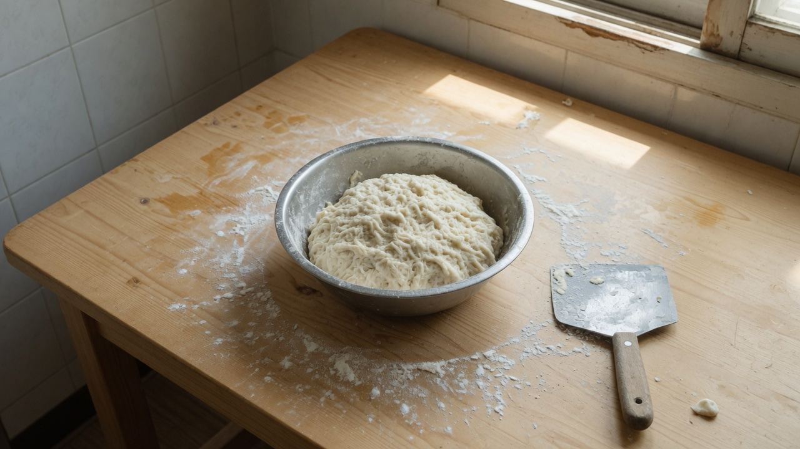

시험 구조, 먼저 한 장으로
제빵기능사는 필기와 실기로 나뉩니다. 저는 준비 초반 이 구분을 느슨하게 알고 시작했다가, 일정을 두 번 고쳤습니다. 필기만 붙잡다 실기 연습량이 부족해지거나, 실기만 하다 필기를 시험 직전에 몰아쓰는 패턴을 피하려면 구조를 먼저 적어 두는 편이 낫습니다.
필기는 재료·공정·위생·기구 등 이론 범위를 묻습니다. 실기는 정해진 시간 안에 지정 반죽·제품을 완성해야 합니다. 둘 다 합격해야 최종 합격입니다. 어느 한쪽만 강해도 끝까지 가기 어렵습니다.
필기 시험장은 실기와 다른 건물이었습니다. 2025년 회차 기준으로 필기는 오전, 실기는 다른 날 오후였는데, 이동·식사 시간을 처음엔 과소평가했습니다. 모의 때 한 번은 점심을 거르고 실기 연습을 했더니 오후 성형 속도가 눈에 띄게 떨어졌습니다.
1~2개월 차 (2024년 9~10월): 기초와 리듬
퇴사 직후 첫 달은 시험 일정 확인 + 학원 상담 + 장비 점검에 썼습니다. 집 오븐은 연습용, 학원 오븐은 시험 감각용으로 역할을 나눴습니다.
- 9월: 접수 일정·교재 목록 정리, 반죽 용어(글루텐, 발효, 퍼프 등) 훑기
- 10월: 학원 실기 수업 주 3회 + 집에서 당일 복습 1회
초반 실수는 '너무 많은 제품을 동시에 연습하려 한 것'이었습니다. 시험에 나오는 핵심 품목에 집중하지 않고 영상에 나온 빵까지 건드리니 손이 느려졌습니다. 시험 범위 품목만 2개월 동안 반복하는 쪽으로 일정을 고쳤습니다.
3~6개월 차 (2024년 11월 ~ 2025년 2월): 실기 반복
이 구간이 저에게 가장 길고 지루했지만, 체감상 가장 실력이 오른 구간이었습니다. 같은 반죽을 온도·시간 메모와 함께 반복했습니다.
- 반죽: 재료 계량 습관, 반죽 종료 온도 체크
- 성형: 크기·무게 편차 줄이기 (저울 사용)
- 굽기: 예열·스팀·시간 기록
필기는 이 시기에 하루 30~40분만 틈새에 봤습니다. 실기가 우선이었고, 필기는 '나중에 몰아서'가 아니라 매일 조금씩 쌓는 방식이었습니다. 11월·12월에는 연말 일정으로 하루가 비는 날이 있었고, 그날은 필기만 1시간 했습니다.
7~8개월 차 (2025년 3~5월): 마무리와 시험
3월: 실기 모의(시간 재기) + 약한 품목만 추가 연습. 필기는 기출·오답 노트 주 3회
4월: 실기 최종 점검, 필기 총정리. 이 시기 컨디션 관리(수면·손목)를 의식했습니다.
5월: 시험. 필기 후 실기까지 간격 동안 새로운 연습 추가 없이 익숙한 루틴만 유지했습니다.
시험 직전에 '한 번 더 새 제품'을 넣으려다 멈춘 기억이 있습니다. 불안해서 새 루틴을 넣고 싶은 마음은 이해되지만, 저는 익숙한 품목만 반복한 쪽이 안정적이었습니다.
학원·집·필기 비율 (제 기준)
정답 비율은 없습니다. 다만 제가 돌아보면 대략 이랬습니다.
- 실기 학원: 주 3회 (회당 3~4시간)
- 집 복습: 학원 온 날 저녁 1~2시간, 주말 1회 반죽만 따로
- 필기: 평일 30~40분, 시험 6주 전부터 1시간
독학만으로 준비하는 분도 많습니다. 학원은 시간 재기·오븐 환경·피드백을 사는 셈으로 봤고, 이론은 교재와 기출로 보완했습니다.
다시 한다면 바꾸고 싶은 것
합격 후 돌아보면 이렇게 조정하고 싶습니다.

- 더 일찍: 시험 품목별 '최소 통과선' 체크리스트 작성
- 더 줄이기: 시험과 무관한 빵 연습 (호기심 제품)
- 더 꾸준히: 필기 오답 노트를 실기처럼 매일 열기
완벽한 일정은 없었습니다. 다만 메모한 날과 안 한 날의 차이는 분명했습니다. 반죽 온도·시간을 같은 형식으로 적은 날은 다음 수업에서 수정이 빨랐습니다.
이 로드맵을 쓰는 방법
월별 일정을 그대로 복사하기보다, 순서를 참고해 주세요. 1~2개월 차에 구조 파악, 중반에 실기 반복, 후반에 모의·필기 총정리 — 이 흐름이 핵심입니다.
다음 편 실기 — 처음 망한 것과 반복한 연습에서 망한 포인트를 풀어 썼습니다. 시리즈 목차는 6편 안내, 동기는 1편에서 이어집니다.
주간 루틴 예시 (중반기 기준)
제가 4~5개월 차에 쓰던 느슨한 주간표입니다. 그대로 따르기보다 참고용으로 봐 주세요.
- 월·수·금: 학원 실기 + 당일 저녁 같은 반죽 한 번 더 (짧게)
- 화·목: 필기 40분 + 실기 동영상 복기 또는 메모 정리
- 토: 약한 품목만 2시간
- 일: 휴식 또는 필기만 (주 1회 완전 휴식 권장)
연습이 늘어날수록 손목·수면을 같이 봤습니다. 후반에 컨디션이 무너지면 속도가 급격히 떨어졌기 때문입니다. 시험 4주 전부터는 새 품목 추가를 멈추고, 익숙한 품목 시간 재기만 했습니다.
실전 적용 노트
로드맵을 쓸 때 가장 도움이 된 것은 월별 목표 한 줄이었습니다. 예: '10월 = 계량·반죽 종료 온도 습관', '2월 = 성형 크기 편차 ±5g 이내'. 크게 잡으면 매일 성취감이 없어지고, 너무 작으면 시험과 동떨어집니다.
학원 강사님·동기 피드백은 '정답'이 아니라 체크 포인트로 받았습니다. 같은 말을 들어도, 그날 반죽 메모와 맞춰 보면 이유가 보이는 경우가 많았습니다.
장비도 초반에 정리했습니다. 저울, 온도계, 타이머가 없으면 '감'에 의존하게 되고, 시험장 환경과 차이가 커집니다. 비싼 장비가 아니어도 같은 도구로 반복 측정하는 습관이 중요했습니다.
이 글은 2편입니다. 1편 동기, 목차 안내와 함께 읽으면 시리즈 전체가 잡힙니다. 3편에서 실기 망한 포인트를 품목별로 더 촘촘히 적겠습니다.
준비 기간이 짧다면 후반 모의·필기 비중을 앞당기되, 실기 손 감각을 완전히 비우지는 않는 쪽을 권합니다. 저는 실기를 끊었을 때 다음 주에 성형이 흐트러지는 것을 여러 번 겪었습니다. 재직 중 준비하시는 분은 주말 비중을 먼저 정하시면 이 로드맵을 줄여 쓰기 쉽습니다.
정리하며
8개월은 길고 짧습니다. 매일 완벽하지 않았지만, 시험 범위에 집중한 날이 쌓인 달이 합격에 가까웠습니다. 이 글이 일정 잡는 출발점이 되길 바랍니다.
다른 회차·환경에서 준비하신 경험이 있다면 문의로 알려 주시면, 확인 후 글에 반영하겠습니다.
초보자가 자주 실수하는 포인트
- 시험 범위 밖 제품까지 동시에 연습해 시간 분산
- 실기만 하다 필기를 시험 직전에 몰아쓰기
- 시험 2주 전 새 제품·새 루틴 추가
- 반죽 온도·시간 기록 없이 '감'만으로 반복
체크리스트
- 필기·실기 시험 일정 최신 공고 확인
- 시험 품목 목록을 적고 주간 연습표에 배치
- 반죽 온도·시간 메모 양식 한 장 만들기
- 시험 6주 전 모의(시간 재기) 날짜 박기
자주 묻는 질문
- 8개월이면 충분한가요?
- 저는 8개월에 합격했지만, 기초·연습량에 따라 더 짧거나 길 수 있습니다. 이 글은 '최소 이만큼은 필요했다'는 제 경험 기준입니다.
- 학원 없이도 가능한가요?
- 가능합니다. 다만 저는 오븐 환경·시간 재기·피드백을 위해 학원을 병행했습니다. 독학 시에는 모의 시험 환경을 직접 만드는 것이 중요합니다.
- 퇴사 후 바로 시작해야 하나요?
- 아닙니다. 저는 퇴사와 동시에 시작했을 뿐입니다. 재직 중 준비하시는 분은 주말·퇴근 후 비율을 따로 잡으시면 됩니다. 기간이 짧아지면 시험 품목 수를 먼저 줄이는 편이 낫습니다.
이 글은 운영자의 직접 경험을 바탕으로 작성되었으며, 오븐·재료·환경에 따라 결과는 달라질 수 있습니다. 식품 위생·알레르기 등 건강 관련 판단을 대체하지 않습니다.